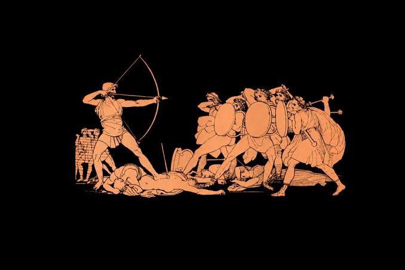

HeroPens
The pen, the hero of the office. Can be used for anything makeing it the savoir of the day, Just like Officeus uses in his adventures.
.png)
Anthenbooks
Keep your thoughts organized with our premium notebooks. just like athena. The mentor of the officey
Toremecus's Paper Weights
Hold back your documents from reaching the goal of escape. Just like Toremecus blocks officius from his goal.

Cyclops Printer
Enhance your printing experience with our high-quality Cyclops Printer. But good luck geting it to work! Its dumb and slow and its goal seams to be to hold you back from geting your papers. Just like a threshold gardein.
.jpg)
Calypso's rainbow pen.
Color your writing with our vibrant rainbow pen. Just like Calypso's magic, it brings joy and creativity to every page. One that has many colors, and can change both good and bad, just like the shape shifter, Calypso.


The Legend Begins: Offysseus, after working with a foreign business (Spartan and Co.), finally tries to apply for his dream job making toys with Ithaca and Co. He was in the business of making weapons that were so destructive they felt like war crimes. After quitting his job, he tries to apply for his dream job. Oddly enough, each floor had its own elevator, meaning that he had to walk through each floor to get to the next elevator. (Homer)
Troy's Toys: On the first floor, Troy's Toys and Co. were having a meeting. They are known rivals of Ithaca and Co. Upon seeing Offysseus and his team infiltrating their private meeting, they began shouting and acting very threateningly. Offysseus retreats down the elevator and begins creating a mini model horse. It is such a masterpiece of engineering and creativity that any toy maker would be fascinated by the ingenuity. He sends it up the elevator and while Troys meeting members are distracted by the model he sneaks by with his men making it up the second elevator. As soon as Offysseus leaves, the horse explodes, destroying the entire floor. I guess old habbits die hard.
The Unibrow C.E.O.: On the second floor, they saw rows and rows of cheese. Because they were lined up so neatly Offysseus and his men believed them to be free samples and ate greedily. Soon after, a man with a unibrow walked in and started yelling at them. They had eaten all the cheese for the cheese convention. He sued them so hard it almost felt like the lawyers were eating them alive. Offysseus only escaped by throwing a pen at the man's eye, blinding him before he identified Offysseus. He then escaped to the third floor.
Circe Farm Co.: On the third floor, some of Offysseus's men wandered off. Circe Farm Co. tricked some of Offysseus's men into eating samples that had a hidden contract forcing them into unpaid labor. Offysseus isn't a lawyer, so with the help of Hermes, he was able to threaten Circe and Co. with lawsuits because she did not follow the requirement of notice. Circe and Co. agreed to let Offysseus's men go if he did not sue them.
The Vegan Trap: On the fourth floor, a funeral for one vegans pet cow was occurring, not realizing this, Offysseus's team ate some assuming it was steak. Because of this, all Offysseus's men were apprehended by security and tased. That left Offysseus all alone from that point on.
Calypso's Restaurant: Because Offysseus did not prevent his associates from eating the beef, he was sentenced to manual labor at Calypso's restaurant. She flirted with him a weird amount for being his boss. Because the higher-ups thought this was a little weird, Offysseus was let off early from his punishment because the flirting was deemed cruel and unusual. Hermes was a big benefactor for Offysseus yet again.
Ithaca and Co.: Finally, Offysseus meets the boss of Ithaca and Co. Her name was Penelope. To get the job of Lead Toy Design Team Leader, a team must complete Penelope's test in the interview in front of all the other applicants. Each team must attempt to make a toy bow from office supplies and shoot it through the holes of twelve tape dispensers cleanly. Team after team failed. When it was Offysseus's turn, the other workers laughed and even threw a chair at him. He was one bedraggled man, all alone, he had no help at all. How could he succeed when so many others failed? Offysseus grabbed three pens, a pencil, and some rubber bands. He constructed his bow masterfully. Finally, he strung the bow with a rubber band and shot his one pencil arrow. His competitors held their breath. It flew through every tape dispenser. Offysseus had gotten the job.
The escort: All other applicants were defenestrated by security from the top floor because of there rude treatment of Officeus and told that if they returned, they were as good as dead
Firing of the Architects: When Offysseus told Penelope about how hard it was to get to the top floor, Penelope decided to fire all the architects for making such a stupid elevator design. While she was at it, she fired her recruiters for letting so many incompetent teams attempt the test. Their skills and etiquette were truly terrible.
Conclusion: Officeus finally got his dream job as lead toy designer and made many spectacular toys. Ithaca appreciated his work for many years to come.